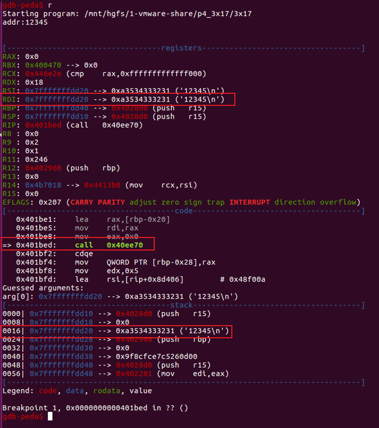

pwnable.tw 之 start ORW 3x17
这里把pwnable.tw上前面的几个题放在一起写篇博客，分别是：
- start
- orw
- 3x17
1 start
1.1 题目
https://pwnable.tw/challenge/#1
1.2 分析
首先，查看文件属性和开启的保护措施：
运行起来试试：
IDA查看二进制文件start：
发现除了_start和_exit没有熟悉的main函数，使用IDA查看伪代码也不是一个正常的函数，原因在于这是一个纯汇编代码。
因此我们需要看懂这段汇编都做了些什么：
1 压了_exit函数的地址
2 清eax,ebx,ecx,edx
3 压字符串，20个字节
4 分别给eax,ebx,ecx,edx赋值(4,1,esp,20),然后int 80h系统调用
5 清ebx,给eax,edx赋值（3，60），然后int 80h系统调用
6 esp加20个字节收回栈空间
7 根据栈上的返回地址（_exit）返回
可以看到有两次系统调用（eax是系统调用号，然后ebx，ecx，edx，esx，edi分别放置系统调用的参数）。查表可知4对应的系统调用是write，3对应的是read。
因此以上4和5可以翻译成：
1 | write(1,esp,20); // 从栈上读20个字节到标准输出（读内存） |
很明显是个栈溢出，read的60个字节会覆盖到返回地址exit。
1.3 利用
exit被覆盖后，就控制了eip，此时应该让eip指向哪儿才能get shell呢？当然是指向我们构造的一段shellcode，shellcode应该放哪儿呢？如果放在栈上，但此时我们并不知道栈的地址，那么能不能泄露栈地址呢？再看一下汇编代码：
第一次执行完retn之后，esp指向下图位置：
如果此时从08048070处开始执行，就可以将old esp的值打印出来，old esp = esp+4。并且可以继续从此esp指向的位置写0x3C字节，如下图所示，esp往上是第二次的输入，我们可以好好构造这次输入，让下次执行retn时，再一次劫持eip（即ret addr），将ret addr覆盖为shellcode addr即可。
现在重新理一下，oldesp是write系统调用时泄露出来的，因此shellcode addr是old esp+0x14。那么现在需要找一段合适的shellcode来get shell。
在http://shell-storm.org/shellcode/找到一段长度合适的shellcode如下：
exp如下：
执行结果如下：
1.4 记录
1.4.1 pwntools的使用
https://pwntools.readthedocs.io/en/stable/about.html
http://brieflyx.me/2015/python-module/pwntools-intro/
pwntools的cyclic：
https://www.cnblogs.com/liuyimin/p/7379985.html
1.4.2 gdb-peda的使用
pwntools + gdb：
http://docs.pwntools.com/en/stable/gdb.html?highlight=gdb#module-pwnlib.gdb
1.4.3 shellcode database
http://shell-storm.org/shellcode/
2 orw
2.1 题目
https://pwnable.tw/challenge/#2
2.2 分析
首先，查看文件属性和开启的保护措施：
运行起来试试：
IDA查看二进制文件orw：
伪代码如下：
【orw_seccomp()是一个设置函数，这里的作用是设置只能使用open，read，write三个系统调用。具体原理参考2.4.2中。】
read从标准输入读取数据放到shellcode地址处，然后转到shellcode处去执行代码。
shellcode地址如下：
view, open subviews, segments查看bss段属性：
【这里显示不可执行，但checksec中RWX属性为has RWX segments且实际shellcode放到bss段中后可执行，这里目前还不知道是为什么？？？】
2.3 利用
题目只允许使用open，read，write三个系统调用函数，因此通过这三个函数实现打开/home/orw/flag文件，将其读到bss段或者栈中，然后再将bss或栈中的数据写到标准输出（即屏幕上）打印。
payload对应的汇编代码：
执行得到flag：
2.4 记录
2.4.1 64位ubuntu安装32位库
ubuntu 64位版本，安装支持32位程序的二进制库。
sudo dpkg –add-architecture i386
sudo apt-get update
sudo apt-get install zlib1g:i386 libstdc++6:i386 libc6:i386
2.4.2 seccomp和prctl
https://blog.betamao.me/2019/01/23/Linux%E6%B2%99%E7%AE%B1%E4%B9%8Bseccomp/
https://www.jianshu.com/p/62ede45cfb2e
https://veritas501.space/2018/05/05/seccomp%E5%AD%A6%E4%B9%A0%E7%AC%94%E8%AE%B0/
2.4.3 pwnlib.shellcraft.i386
这次题目中只用到了两个重要的函数。
第一个是将字符串push到栈中，此时esp指向的就是这段字符串。
pwnlib.shellcraft.i386.pushstr(string, append_null=True)
1 | >>>print shellcraft.i386.pushstr('aaaa').rstrip() |
第二个是系统调用，syscall是要调用的函数（eax存放系统调用号），后面紧接着的是各个参数（ebx，ecx，edx等）（参数可以是某个寄存器，如’esp’）。
pwnlib.shellcraft.i386.linux.syscall(syscall=None, arg0=None, arg1=None, arg2=None, arg3=None, arg4=None, arg5=None)
1 | print pwnlib.shellcraft.i386.linux.syscall('SYS_execve', 1, 'esp', 2, 0).rstrip() |
参考别人的writeup，发现简洁写法（因为提前用context设置了目标环境）：
3 3x17
3.1 题目
https://pwnable.tw/challenge/#32
3.2 分析
查看文件类型和开启的保护机制：

是去了符号表的，且静态链接。因此IDA的F5基本上没用了，只能纯看汇编。先执行看看：
属于addr和data，这里猜测会是将data写到addr上。 后续查看汇编代码，确实是这样。
IDA打开二进制文件，只有start函数：
不知道以上各地址和寄存器的值代表什么内容，因此自己写了个printf(“hello world!\n”)的小程序，使用IDA打开，找到start对应的汇编，如下：

因此3x17的start可解析为下图：
64位汇编参数传递规则如下：

因此
__libc_start_main(mian[sub_401B6D], argc, ubp_av, init [loc_4028D0], fini[sub_402960], rtld_fini)
main函数代码如下：
sub_40EE70具体做了什么，看汇编代码太复杂，因此通过gdb调试看结果，使用gdb在401BED处下断点。
断点处信息如下：

执行完该函数之后，返回值会存放在RAX中。刚刚输入的是12345，返回值为0x3039，即12345的十六进制，因此该函数就是将输入的十进制数转换为一个十六进制地址。
init是执行main函数之前会执行的，而fini是main执行完后执行的函数。
因此考虑用任意地址写去覆盖fini的执行流程。如下是fini的汇编代码，在4B40F0处分别调用两个函数，且调用顺序是先fini_array[1]后fini_array[0]。那么只要将数组中的地址覆盖为我们想要的地址，就可以控制程序去执行了。
3.3 利用
获得以上信息之后，我们需要考虑，应当让fini_array的两个函数地址分别被覆盖为什么，才能达到利用的目的。利用就是get shell。在程序中使用strings搜索“/bin/sh”无果，因此一步完成get shell是不可能的，需要寻找其他方法。
main函数中可以实现任意地址写，如果将fini_array[1]的地址指向main，那么似乎就可以继续任意地址写。查看main函数，发现byte_4B9330为1时才能进入任意地址写操作，而我们第二次进入该函数时byte_4B9330已经为2了。怎么办呢？但是看看前面的int8，这是一个8位无符号整形，因此不用加多久，就整数溢出又变成1了。
那么怎么让main一直被调用呢？剩下的fini_array[0]就派上用场了。
把fini_array[1]和fini_array[0]分别覆盖为main和调用array的fini函数，就可以实现如下循环。

这样就可以不限次数的任意地址写了。但是往哪里写，写什么内容呢？因为没有可写可执行段，因此直接把shellcode布置到内存空间中跳转执行是不可能的。那么就只能考虑ROP了，但不知道栈的位置，也没法去布置栈空间实现ROP。不过RIP是我们可以控制的，因此只要存在某一刻rsp会被泄露出来，那么只要在这一刻之前把对应地址空间布置好，那么就可以不断地ret然后把ROP链串起来啦。
回到fini函数中，rbp原本的值被暂时存放在栈中，这里以rbp做临时寄存器，存放了fini_array的起始地址，此时rbp=0x4B40F0。

如果call指令能跳转到leave; ret; 这样的指令去，那么就可以控制rsp的地址了。如下是main函数中一条合适的指令：
1 | rbp = 0x4B40F0 |
这里必须让fini_array[1]为main，fini_array[0]为0x401C4B。这样rip被控制再去执行一次main函数，利用最后的ret，使rip从0x4B4100处执行，这里是我们提前布置好的空间。
那么接下来的工作就是怎么布置0x4B4100以上的空间，通过ROP的方式获取shell。
一条简单的获取shell的命令：
32位系统上通过int 80进行系统调用，64位系统上通过syscall指令实现。根据以上代码，需要控制rax为59（execve的系统调用号，0x3B），rdi为字符串“/bin/sh\x00”的地址，rsi为0，rdx为0。因此rsp指向位置的ROP链应如此布置：
1 | pop_rax |
最后，字符串“/bin/sh\x00”随便找一块可写的空间写上去就行。
寻找gadget：
写exp：

执行获得flag：
3.4 记录
3.4.1 64位汇编参数传递
http://abcdxyzk.github.io/blog/2012/11/23/assembly-args/
https://ctf-wiki.github.io/ctf-wiki/pwn/linux/stackoverflow/stack-intro-zh/